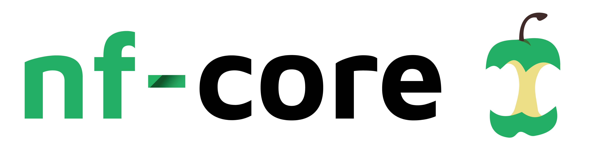

Adding General and NF-CORE Pipelines
General
Hello World
A simple script showing the basic Hello World! example for the Nextflow framework.
From the Launchpad, select “Add pipeline”.
Give your pipeline a descriptive name. It needs to be unique to your community (can’t create one that already exists in broader BioCommons group).
Select your previously configured compute environment.
Provide pipeline codebase URL https://github.com/nextflow-io/hello.
Select main for the Revision number.
Specify $TW_AGENT_WORK for the work directory.
Select either gadi or setonix for the config profiles (these are provided in the code base of the workflow).
Select “Add”.
NF-CORE
nf-core is a community effort to collect a curated set of analysis pipelines built using Nextflow. It has three target audiences: facilities, single users, and developers. For facilities, it provides highly automated and optimised pipelines that guarantee reproducibility of results for their users. Single users profit from portable, documented, and easy-to-use workflows. However, you can also become a developer and write your own pipelines in Nextflow using ready-made templates and helper tools.

Currently, there are 86 pipelines available, below are a few examples:
Germline-StructuralV
GermlineStructuralV-nf is a pipeline for identifying structural variant events in human Illumina short read whole genome sequence data. GermlineStructuralV-nf identifies structural variant and copy number events from BAM files using Manta, Smoove, and TIDDIT. Variants are then merged using SURVIVOR, and annotated by AnnotSV. The pipeline is written in Nextflow and uses Singularity/Docker to run containerised tools.
Structural and copy number detection is challenging. Most structural variant detection tools infer these events from read mapping patterns, which can often resemble sequencing and read alignment artefacts. To address this, GermlineStructuralV-nf employs 3 general purpose structural variant calling tools, which each support a combination of detection methods. Manta, Smoove and TIDDIT use typical detection approaches that consider:
Discordant read pair alignments
Split reads that span a breakpoints
Read depth profiling
Local de novo assembly
This approach is currently considered the best approach for maximising sensitivty of short read data (Cameron et al. 2019, Malmoud et al. 2019). By using a combination of tools that employ different methods, we improve our ability to detect different types and sizes of variant events.

From the Launchpad, select “Add pipeline”.
Give your pipeline a descriptive name. It needs to be unique to your community (can’t create one that already exists in broader BioCommons group).
Select your previously configured compute environment.
Provide pipeline codebase URL https://github.com/Sydney-Informatics-Hub/Germline-StructuralV-nf.
Select main for the Revision number.
Specify $TW_AGENT_WORK for the work directory.
Select either gadi or setonix for the config profiles (these are provided in the code base of the workflow).
Select “Add”.

Ampliseq
nfcore/ampliseq is a bioinformatics analysis pipeline used for amplicon sequencing, supporting denoising of any amplicon and, currently, taxonomic assignment of 16S, ITS, CO1 and 18S amplicons. Phylogenetic placement is also possible. Supported is paired-end Illumina or single-end Illumina, PacBio and IonTorrent data. Default is the analysis of 16S rRNA gene amplicons sequenced paired-end with Illumina.
From the Launchpad, select “Add pipeline”.
Give your pipeline a descriptive name. It needs to be unique to your community (can’t create one that already exists in broader BioCommons group).
Select your previously configured compute environment.
Provide pipeline codebase URL https://github.com/nf-core/ampliseq/tree/2.6.1.
Select 2.6.1 for the Revision number.
Specify $TW_AGENT_WORK for the work directory.
Select either gadi or setonix for the config profiles (these are provided in the code base of the workflow).
Select “Add”.
RNAseq
nf-core/rnaseq is a bioinformatics pipeline that can be used to analyse RNA sequencing data obtained from organisms with a reference genome and annotation. It takes a samplesheet and FASTQ files as input, performs quality control (QC), trimming and (pseudo-)alignment, and produces a gene expression matrix and extensive QC report.

From the Launchpad, select “Add pipeline”.
Give your pipeline a descriptive name. It needs to be unique to your community (can’t create one that already exists in broader BioCommons group).
Select your previously configured compute environment.
Provide pipeline codebase URL https://github.com/nf-core/rnaseq.
Select Master for the Revision number.
Specify $TW_AGENT_WORK for the work directory.
Select either gadi or setonix for the config profiles (these are provided in the code base of the workflow).
Select “Add”.
Configured Launchpad
Your launchpad will now reload with a preconfigured workflows.

All materials copyright Sydney Informatics Hub, University of Sydney